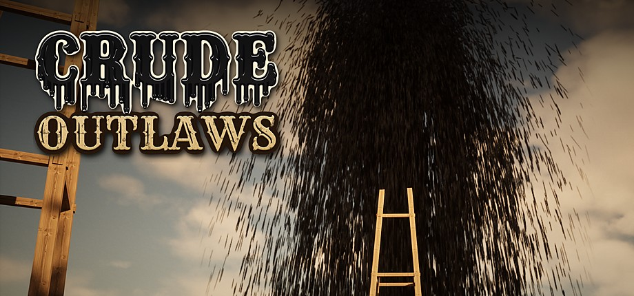
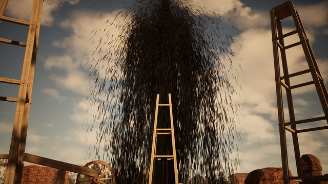
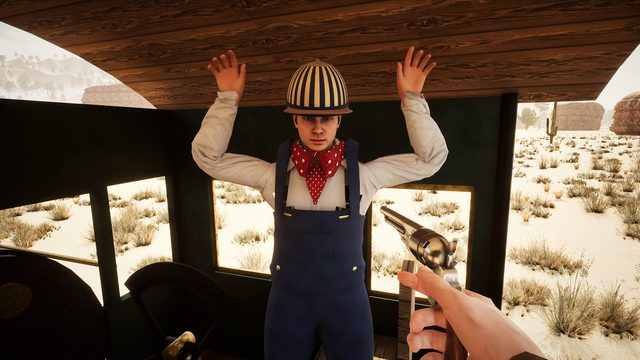
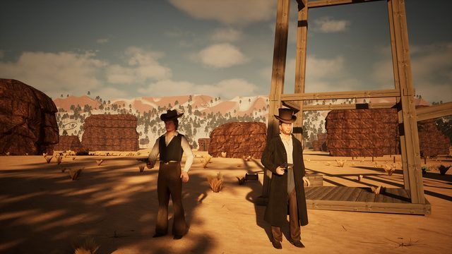
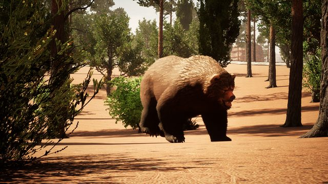
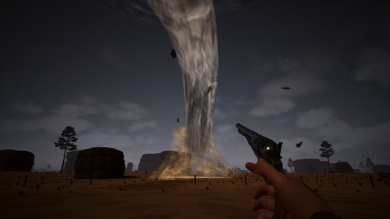
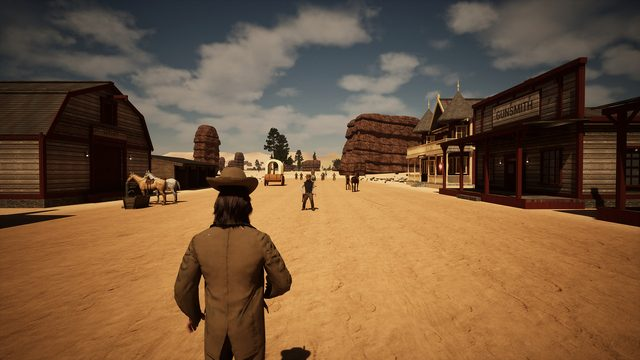
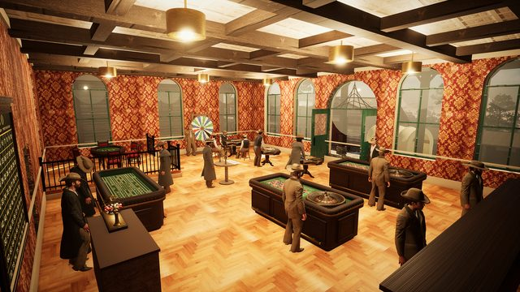
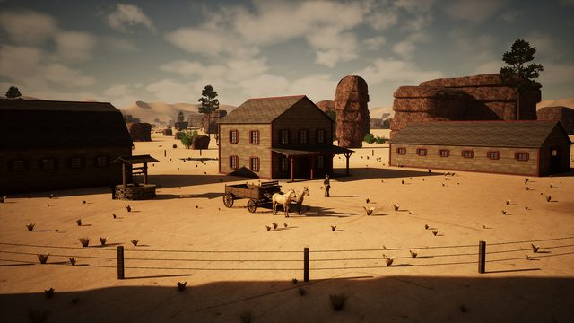

Crude Outlaws: press kit
- Developer
- Kelbra Games (Kelbra Business Solutions LLC), Missouri, USA
- Release
- 2027, Steam Early Access (Windows PC). Exact date and price to be announced. A free demo is planned for Steam Next Fest (February 2027).
- Players
- 1 to 4, online co-op, or solo
- Genre
- Western, survival, base building, oil business
- Setting
- An American frontier territory in the 1890s: six towns across snowy pines, prairie, red-rock desert and silver-mine country
- Engine
- Unreal Engine 5
- Language
- English (text, voices and subtitles)
- Press contact
- support@kelbrasolutions.net
- Pages
- Support · Privacy
The game
It's 1890-something in the Territory, and there's oil under the prairie. Survey the land, drill test holes and put up a timber derrick when you hit a strike. Lay pipe to your storage tanks, load the barrels on your wagon and haul them to the oil buyer in town.
Every gusher brings trouble. Outlaw gangs raid your farm, a rival outfit wants your claims, and the richest oil in the country sits behind the log walls of the oil thieves' camps.
Play alone or with up to three friends. Everything is shared: the company's money, the oil, the homestead and the fights. Rob the express train or guard it. Settle it at high noon in a street duel. Build a home on the claim, mine and smelt at your own forge, fish, pan for gold and breed horses.
Six towns each have their own sheriff, jobs and story, among them Perdition, a rich brick town with an opera house.
Features
- 1 to 4 player online co-op, or solo.
- An oil business: survey, drill, pipe, store, haul by wagon or rail, refine crude into kerosene, and watch the price board.
- Rob the train the easy way (logs or dynamite on the track) or the hard way (ride alongside, climb aboard and fight forward car by car), then blow the express safe. Or play the lawman and guard the payroll.
- 90 outlaw camps and 30 oil thieves' camps, a rival oil company, wanted posters, grizzlies, wolves and twisters.
- Free building that snaps together, from a log cabin to a two-storey house, plus mining, smelting and a forge.
- Street duels, Sunday Frontier Days (shooting, horse racing, fist fights, arm wrestling, bronc riding) and nine card and casino games across the saloons and the silver town's casino, all for in-game money only.
- Gear in five grades and named one-off items earned through each town's story.
- A real fishing game, gold panning, horse breeding with bloodlines, cattle, chickens, pigs and sheep.
- Normal Mode starts on a settled farm. Hard Mode starts you on a bare claim with a bank loan due every Saturday.
Screenshots
All pictures are real in-game captures (1920x1080). Click a picture for the full size.
















Logo and art


Download all images (zip, 36 MB)
All 27 screenshots, the logo, the Steam capsules and the emblem. A trailer made from real gameplay will be on the Steam page; email us if you need the video file.
Content
A Western with frequent gunfights against outlaws and wild animals, with no blood or gore. It also has hunting, saloon drinking with a drunk effect, period clothing, and card and casino games played for in-game money only. There's nothing to buy inside the game, and no swearing.
About AI use
Some content was made with AI tools during development, then reviewed and edited:
- concept pictures and textures
- some 3D building and prop models, cleaned up and rebuilt in Blender
- the spoken lines of the town's people (open-source text-to-speech with made-up voices; no real person's voice is copied)
Nothing is generated while you play. The store pictures and this press kit use only real in-game captures.
About Kelbra Games
Kelbra Games is a small independent studio in Missouri. Crude Outlaws is one of three co-op games it is bringing to Steam.